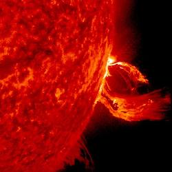
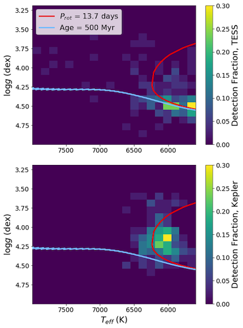
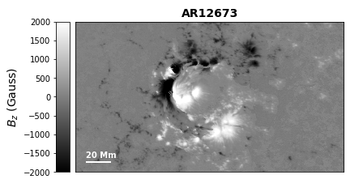
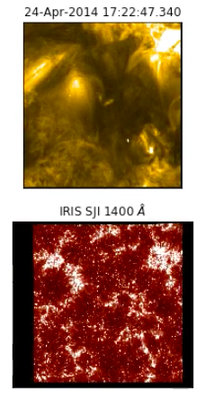

A summary of my past and present research
- Stars
- Active Sun
- Quiet Sun
Stellar Coronal Mass Ejections
Thanks to survey missions like the Kepler Space Telescope, we have an abundance of observations of extreme stellar flares from solar-type stars. Conversely, we have a shocking lack of observations of stellar Coronal Mass Ejections (CMEs); we know from solar observations that the most extreme solar flares are nearly always accompanied by a CME. At the moment, a lack of high-resolution surface stellar magnetic field observations limit our capability to probe the physics involving these extreme events. My dissertation work collaborating with Dr. Xudong Sun will use state of the art solar models to improve our understanding of the onset and evolution of the most extreme solar and stellar CMEs.
Stellar Rotation in TESS
All stars rotate, and stellar rotation periods hold a ton of information about a star's evolutionary past and future. My second-year graduate work collaborating with Dr. Jamie Tayar and Dr. Jennifer van Saders focused on measuring and analyzing rotation periods for stars in the TESS Southern Continuous Viewing Zone. Rotation periods measured from these nearly year-long lightcurves, combined with rotation periods measured with the Kepler Space Telescope, provide the ideal laboratory to understand rotation across the main sequence. This work reveals key differences between the stellar populations in the TESS and Kepler fields and shows that we can trace rotational evolution with a combined TESS and Kepler sample. To learn more about what we found with this sample of TESS and Kepler stars, see my upcoming paper!
Solar Active Regions and Eruptions
Solar active regions are a major source of solar eruptions that can negatively affect Earth. My first-year graduate research focused on several parameters in solar active regions that may be related to the eruptive potential of active regions. This work, with Dr. Xudong Sun, focused on how electric currents within active region magnetic fields are related to solar eruptions. This work showed that the degree to which these electric currents in active regions are neutralized was a good indicator to whether an active region would erupt. For more details, see my second lead-author paper.
The Magnetic Origins of Coronal Plumes
My undergraduate and post-baccalaureate research focused on solar coronal plumes — fountain-like structures in the solar corona which form in either quiet Sun or coronal hole regions. Although plumes have been observed for decades via white-light eclipse images and more recently in the Extreme Ultraviolet (EUV), their formation mechanisms remain uncertain. As an intern at the University of Alabama in Huntsville and NASA Marshall Spaceflight Center, I worked with Dr. Sanjiv Tiwari, Dr. Navdeep Panesar, and Dr. Ronald Moore to characterize coronal plumes using data from the Solar Dynamics Observatory. This work provided insight on the formation mechanisms of coronal plumes and resulted in my first lead-author paper.
After obtaining my Bachelors' degree from the University of Washington, I continued this project through a post-baccalaureate position at the Lockheed-Martin Solar and Astrophysics Lab and the Bay Area Environmental Research Institute. While here, I worked with Dr. Sanjiv Tiwari and Dr. Bart de Pontieu to further characterize coronal plumes using data from the Interface Region Imaging Spectrograph, a satellite which takes data in the transition region of the Sun. While my undergraduate work focused on magnetic and coronal signatures of plumes, this work focused on signatures in the chromosphere and transition region. I completed my contribution to this ongoing project in Autumn 2018.